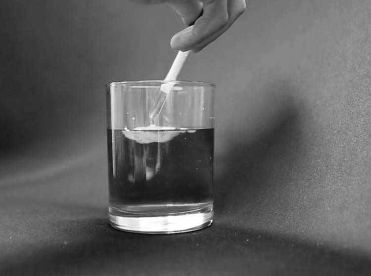
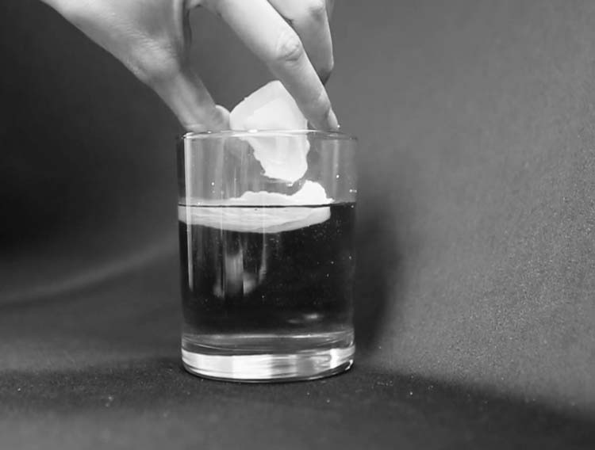
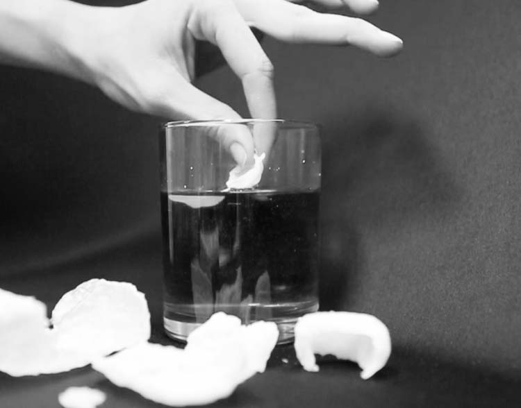

Compounding Density
Exploring the potential of a highly experimental material
What started as an observation of removal of heated wax out of water quickly manifested itself as an investigation of state change and material volition. The richness of the material is its response to movement and the degree of control over the resulting forms. I entertained highly speculative applications of the material as a resilient response to flood conditions. The highly adaptable nature of the material lends to its ability to a wide range of applications - from a deployable slide in case of emergency to a human hamster wheel that allows a man to walk on water.
application: wax is heated to a liquid state and first introduced to water with a dropper. the material solidifies as it touches the water, but remains liquid inside the initial hardened shell. the primary shell is built upon as more material is added and the weight causes it to dip deeper into the water
extrication: the hardened shell is slowly tipped to allow the liquid to spill outside the shell into supplemental shells. at the threshold for fracture, the subsequent shell breaks off from its parent, fostering another pool of liquid wax
fragmentation: the resulting shells created become thinner as they are removed. the most fragile have a lower threshold for fracture. the final shells created do not provide enough volume to create a subsequent shell, and are removed as one solid piece
Supermax Slide: uses a fire hydrant as inspiration to tap into the existing city grid and deposit material in a critical response scenario. The rate of deposition can be controlled to respond with either a barricade to urban areas or rather as a medium for transportation or emergency escape. The tendency of the material to sink into water gives it structural advantage.
Luminous Ascent: uses landscape sprayheads to deposit material in a delicate manner. This material is thin and delicate to allow for daylight to filter through and nourish the vegetation below. More or less material can be applied in order to respond to the needs of the vegetation.
Merry-go-about-your-business: a standalone use of the material in which a single user can navigate flooded areas in a self-forming “hamster wheel” of sorts. Wax that is carefully extruded at a consistent angle with a steady flow of liquid medium can create an enclosed shape. The texture on the resulting curl also helps to propel the piece along as the user walks forward.
Tether transmutation: uses a cast-and-pull method to extrude wax across a watery gap. The two sides are allowed to begin expansion, then are caught with a device that cinches the two starts together.
I am primarily interested in the application of the material as a resilient response to the environment. As time goes on, the sea levels continue to rise, threatening the lives and livelihood of people in coastal and island regions. For the sake of this project, I narrowed my focus to city infrastructure. In the larger realm, however, the material can become a new landmass – both rooted on land and floating on water. The highly adaptable nature of the material lends to its ability to a wide range of applications.